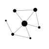
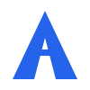
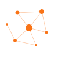
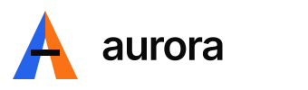
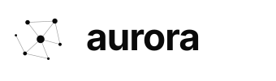
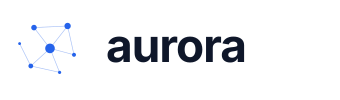

Kit de Marca
Un único lugar para todo lo que Aurora parece y suena — el sistema de diseño vivo y un kit de marca listo para usar. Coge lo que necesites.
Actualizado Julio 2026 · v5.2
Logo
Una A geométrica construida con dos trazos que se encuentran en el vértice. El trazo izquierdo es azul #2563eb, el derecho naranja #f97316, con una barra horizontal en negro. Es la inicial de Antizar. Siempre vectorial — nunca lo recrees a mano.
Símbolo

Blanco
Negro
Azul
NaranjaLogotipo

Positivo — sobre claro
Monocromo negro
Monocromo azulTamaño mínimo: símbolo ≈ 24px · logo ≈ 120px de ancho. Mantén un espacio libre de al menos el ancho del símbolo en los cuatro lados.
Nunca
Color
El azul #2563eb y el naranja #f97316 son la señal, no el fondo. Si todo es color, nada es color.
Marca
Neutros
Estado — solo severidad, nunca marca
Reglas del acento
Presupuesto: máx 5 momentos de color saturado por página.
✅ CTAs, links activos, 1-2 KPIs, 1 serie de chart, badges críticos.
✗ Texto de cuerpo, iconos decorativos, separadores, fondos de sección.
Regla dual: el azul y el naranja no se mezclan en la misma sección. Uno es primary, el otro es secondary.
Sin gradientes azul→naranja
La interpolación sRGB entre #2563eb y #f97316 produce gris morado en el punto medio. Usar bloques de color sólido. Si se necesita un gradiente, monocromo (azul→azul-claro).
Tipografía
Inter en todo el sistema. Tamaños fluidos con clamp() para display y h1.
Forma & Espacio
Bloques de color sólido con tamaños irregulares. No grid de cards iguales. Usar .nz-bento con __cell--span-*.
Bento grid
Escala de espaciado — múltiplos de 4px
Componentes
Renderizado directamente desde ntizar.css — no son capturas, así que nunca se desvían.
Botones
Tags
KPIs
Terminal
Voz & Posicionamiento
Aurora es un design system CSS-only creado por David Antizar. 243 KB de CSS puro, 119 componentes en 11 packs modulares, sin build step, sin dependencias, sin JavaScript obligatorio. Todo namespaced bajo .nz para no colisionar con Tailwind, Bootstrap o cualquier otro framework.
Keywords de marca
Aurora NO es
Tono
"243 KB de CSS, 119 componentes, 0 dependencias"
"Cambia un atributo y toda la página se reescribe"
"Liquid glass real de 4 capas con borde cromático"
"El design system más revolucionario del mercado"
"Cambia para siempre tu forma de desarrollar"
"La solución definitiva para..."
Descargas
Logos (SVG + PNG), símbolo, favicon y brandbook. Para cualquier otra cosa — colaboraciones, recursos a medida — abre un issue en GitHub.
5 variantes en SVG + PNG
5 variantes en SVG + PNG
SVG, ICO y PNG multi-tamaño
Guía de marca completa en markdown
{kind=link}
{kind=link}
{kind=link}
{kind=link}
{kind=link}
{kind=link}
{kind=link}
{kind=link}
{kind=link}
{kind=link}
{kind=link}
{kind=link}
{kind=link}
{kind=link}